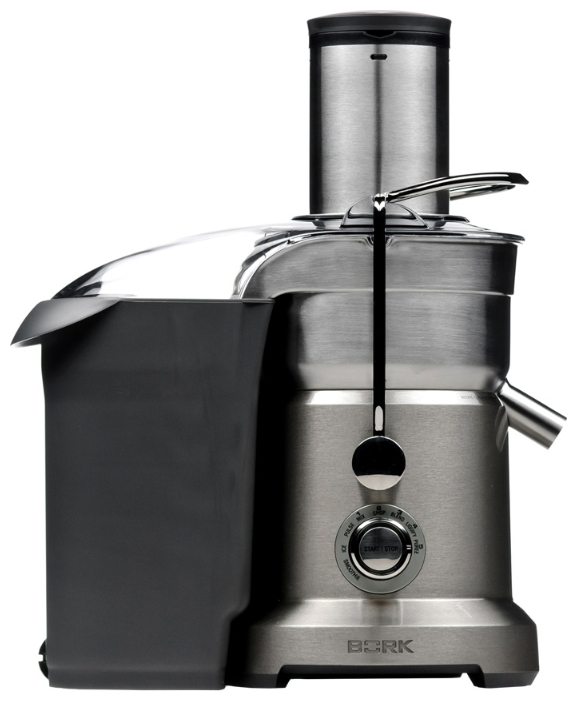

Сокоблендер BORK S810
Технические характеристики
- Мощность: 1800 Вт
- Скорость отжима: 6500-13000 об/мин
- Количество скоростей отжима: 5
- Количество режимов в блендере: 8
- Габариты со стаканом (ДxШxВ): 25x35x40 см
- Вес: 9.28 кг
- Длина электрического кабеля: 1 м
- Объем стакана для сока: 1200 мл
- Объем кувшина для жмыха: 3500 мл
- Объем чаши блендера: 1500 мл
- Материал корпуса: нержавеющая сталь
- Диаметр загрузочного желоба: 84 мм
- Срок гарантии: 1 года
Особенности
- Плавный пуск двигателя
- Электронная защита от перегрузки
- Микроячеистый фильтр
- Ножи с нитрид-титановым покрытием
- Профессиональный переключатель скоростей
- Система ножей KINETIX
- Принудительное охлаждение двигателя
- Идеально сбалансированный двигатель
- Режим ожидания. Включается после 2-х минут бездействия соковыжималки
Дополнительная информация
Количество оборотов соковыжималки:
- 1 скорость вращения 6.500 об/мин
- 2 скорость вращения 8.000 об/мин
- 3 скорость вращения 9.800 об/мин
- 4 скорость вращения 11.000 об/мин
- 5 скорость вращения 13.000 об/мин
Количество оборотов блендера:
- 1 скорость вращения 4.200 об/мин
- 2 скорость вращения 5.500 об/мин
- 3 скорость вращения 7.000 об/мин
- 4 скорость вращения 8.500 об/мин
- 5скорость вращения 10.000 об/мин